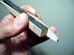

Use the provided check boxes to mark off your progress as you go.
Use the provided check boxes to mark off your progress as you go.
Use the provided check boxes to mark off your progress as you go.
Locate the 3/8 x .028 inch thick center portion of carbon laminate that you cut the ends off of for the mid panel lower cap strips, when you built the tip panels.
Cut two six inch long pieces from this to serve as top and bottom cap strips for the wing bolt beam.
See Mark's original Wing Spar Materials document for cap strip laminate details.
Note that Mark's design calls for .028 inch bottom caps and .021 inch top caps for the wing bolt beam. But the design is based on stiffness, so a little extra thickness won't be a problem.
Cut three 3/8 inch long segments from the 1/4 x 1/2 x 18 inch maple stick.
This 3/8 inch dimension will be used across the width of the bolt beam.
Thus the grain will be perpendicular to the beam axis.
Two will be stacked one atop the other for the front bolt location and the third will be used for the rear bolt location.
Create a vertical end-grain balsa web for the bolt beam.
Mark's design specifies 8# balsa, but any weight will do since it is located essentially at the C.G.
The web should be 3/8 inches wide by 1/2 inches tall by 5 inches long.
You will shape it to the correct final contour height in the following steps.
I chose to use some of the scrap left over from the tip and mid panel webs blank. This material is 3/16 inches thick and 4 inches wide. Cut three 1/2 inch strips across the grain. Glue these end to end and face to face with medium CA, then trim to the correct 3/8 x 1/2 x 5 inch dimension.
 | Bolt Beam Parts |
|---|
Mix up a small quantity of 5 minute epoxy.
Working on a non-stick flat surface (like wax paper over plate glass),
butter the lower bolt beam cap.
Place a maple insert at one end.
Butter the top of this insert and stack a second one on top of it.
Note the grain of these inserts will be running perpendicular to the axis of the beam.
Butter both ends of the vertical end-grain balsa beam web core and place it on the spar cap against the maple insert.
Place the final insert into the remaining space.
Squeeze out excess epoxy and weigh or hold it down to keep it flat while curing.
When the epoxy is cured, cut off excess splooge with a sharp X-acto knife.
Make two marks on the side of the beam 1-3/4 and 2-1/4 inches from the front end (the end with the two stacked inserts).
These marks represent the location of the center panel wing spar.
Make a mark parallel to the lower cap strip
.440 inches offset from the lower cap strip surface. This represents
the height of the web core at the spot where the beam will pass through
the center panel wing spar.
Make two additional marks parallel to the cap strip, one each on the maple inserts.
The mark for the front insert should be .4 inches from the lower cap strip surface.
The mark for the rear insert should be about .150 inches from the lower cap strip surface.
Finally connect the insert marks with the center panel wing spar mark to finish out the correct contour for the bolt beam (see photo below).
Shape the bolt beam top surface inserts and balsa web to match this marked contour using a disk or belt sander.
Make sure you keep the top surface square to the sides of the beam.
The aim of this contour is that when the beam is finished with
the top cap strips and glass wrap, its thickness will nowhere protrude
above the center wing ribs.
| Bolt Beam Contour | Bolt Beam Final Shape |
|---|
Check the final shape by first placing the top cap strip on top of the beam and taking a thickness measurement.
The dimension should be <= .465 inches so that after wrapping with glass it will be <= .477 inches.
Note the center panel web core at the center of the wing is .508. Making the bolt beam about 1/32 inch thinner as described here will ensure that it does NOT bulge the center panel spar caps. Fill the excess space with thickened epoxy when you build the center panel spar.
Finally, make sure that when a center panel central rib is placed next to the bolt beam with it's top cap strip, that the beam does not stick up above the rib contour including the spoiler notch.
To do this, place the bolt beam next to the rib, lined up in the correct location as if it were sitting on the center panel bottom cap strip and with the TE of the bolt beam lined up as if it were resting on the building surface.
Then while holding the beam and rib in this relative position, check that no part of the bolt beam top cap strip sticks up above the top surfaces of the rib.
Leave a little extra clearance when making these inspections to allow
for the thickness of the glass wrap, about .015 inches.
Correct the contour of the bolt beam to pass these tests before proceeding.
| Bolt Beam Position | Check of TE Region |  | Check of LE Region |
|---|
Place the shaped bolt beam on a flat non-stick surface.
Mix up a small batch of 5 minute epoxy.
Coat the top cap strip and place onto the bolt beam.
Weight or hold down the cap strip to ensure it is in full contact with the bolt beam while it cures.
Once cured, clean off all splooge and round off the top and bottom spar cap edges so the glass layers will not be cut by sharp corners when stressed.
Cut a piece of 2 oz fiberglass measuring 4 x 6 inches on the bias (+/- 45 degrees).
This will be used to wrap around the bolt beam two complete times with a full overlap on the top surface (i.e. there are actually three layers on the top).
I like to use a rolling cutter for cutting glass on the bias.
| Ready to Wrap |
|---|
Lightly mist the glass with spray adhesive.
After misting, the glass becomes difficult to handle; you may want to place a sheet of wax paper onto the misted surface to facilitate handling while you wrap the spar.
Start the wrap by aligning the glass on one edge of the bolt beam, gently smoothing it down on the top surface.
Gently pull the glass and smooth down the side of the beam.
Continue in this fashion until you have two layers on all sides, with an extra (third) layer on the top surface.
Make sure the glass goes all the way to both ends of the beam to bond to the maple inserts to prevent them from splitting later.
See the Wing Spar Materials document which has a figure showing how the glass is wrapped around the beam.
Try to avoid bubbles and wrinkles as you wrap.
Trim the glass flush with the edge of the beam with scissors. Leave the excess glass at the ends until after the epoxy is cured (next step).
| Wrapped and Ready for Epoxy |
|---|
Mix up a small batch of slow epoxy, unthickened.
Saturate the glass and blot away excess epoxy.
The goal is to completely wet out the glass, leaving no air bubbles, without leaving a lot of resin.
I found that the glass did not want to stay compressed to the beam.
After trying a few different things, I settled on wrapping the wetted and blotted glass with electrical tape.
To do the optional tape compression, hold the beam on one end with a scrap of wax paper to keep your hands clean so the tape will stick to itself.
Start at the opposite end and wrap the tape around the beam back onto itself and begin a spiral overlap towards the end you are holding.
Stretch and pull the tape gently as you wind so that it compresses the glass against the beam driving out bubbles and wrinkles.
I used a 1/3 lap in which the tape progresses 1/3 of its width for each spiral turn.
A 1/2 lap would work too.
When cured, peel the tape off and discard.
Remove any tape adhesive residue with solvent.
Trim the glass flush with the ends of the beam with a sharp X-acto knife or scissors.
| Spiral Wrapped Electrical Tape Compression |
Finished Bolt Beam (Final Weight 6.5g) |
|---|
Take this opportunity to drill the holes
for the wing bolts.
Make a drill set point on each end of the top cap with an X-acto.
The position is 1/4 inch from each end, centered on the 3/8 width of the beam.
The hole centers should end up 5-1/2 inches apart.
Anchor the beam to a scrap of wood,
preferably 3/8 inches wide like the beam is. You will use this to ensure
the holes come out clean on the bottom face of the beam, and to serve as a drill jig for mounting the wing later.
| Drill Backing/Jig |
|---|
Use a 3/16 inch brad point drill with a
drill press to drill the holes.
Drill all the way through the beam and the backing with smooth even
pressure.
Use as high a speed as practical.
The brad point drill makes nice clean holes through wood and the spar caps and the holes are very close to the nominal dimension .188 inches which is just right for a 10-32 bolt with clearance.
Remove the beam from the scrap and mark the scrap so you know which side is up and which end is forward.
You will want to use it in the correct orientation later as a drill jig when mounting the wing.
| Drilling | Brad Point Bit & Nice Clean Hole |
|---|
This completes the bolt beam building sequence. Continue building the center panels at this point. The bolt beam is bonded into the center panel as it is built.
| Revised 4/26/2002 James R. Osborn |
|---|
{kind=link}
{kind=link}
{kind=link}
{kind=link}
{kind=link}
{kind=link}
{kind=link}
{kind=link}
{kind=link}
{kind=link}
{kind=link}
{kind=link}